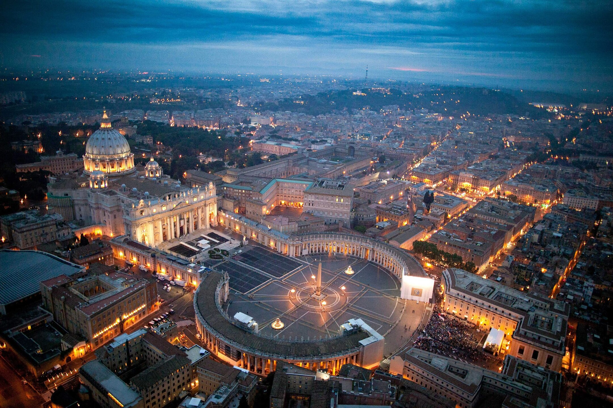
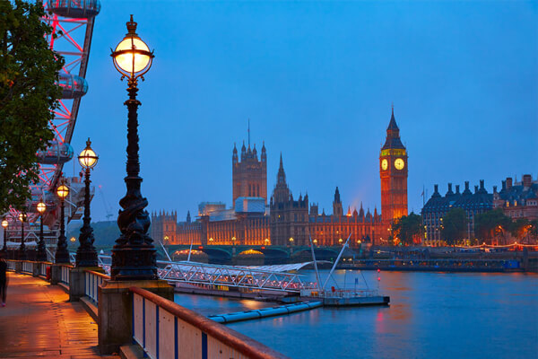

Meu nome é Aristides Ferreira, solteiro, 43 anos, natural de Sobral-Ceará. Desde criança moro em Planaltina-Distrito Federal. Cristão católico. Gosto de atividades físicas ao ar livre, como corrida e caminhada. Gosto e praticar alguns esportes, principalmente futebol, volei, tênis de mesa. Flamenguista de coração. Faço trabalho voluntário com fotografia em uma igreja na qual eu faço parte.
| Estados Unidos | |
|---|---|
| Vaticano |  |
| Inglaterra |  |
Veja as melhores imagens já feitas pelo fotógrafo oficial da Nasa
National Geography Brasil